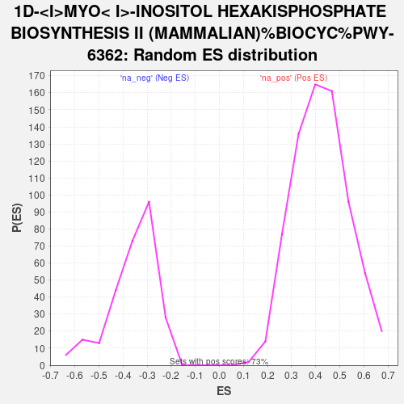

| | | Dataset | CD_deg |
| Phenotype | NoPhenotypeAvailable |
| Upregulated in class | na_neg |
| GeneSet | 1D-MYO< I>-INOSITOL HEXAKISPHOSPHATE BIOSYNTHESIS II (MAMMALIAN)%BIOCYC%PWY-6362 |
| Enrichment Score (ES) | -0.719437 |
| Normalized Enrichment Score (NES) | -2.0021515 |
| Nominal p-value | 0.0 |
| FDR q-value | 0.019283416 |
| FWER p-Value | 0.355 |
Table: GSEA Results Summary
_BIOCYC_PWY-6362_75.png) Fig 1: Enrichment plot: 1D-MYO< I>-INOSITOL HEXAKISPHOSPHATE BIOSYNTHESIS II (MAMMALIAN)%BIOCYC%PWY-6362
Fig 1: Enrichment plot: 1D-MYO< I>-INOSITOL HEXAKISPHOSPHATE BIOSYNTHESIS II (MAMMALIAN)%BIOCYC%PWY-6362
Profile of the Running ES Score & Positions of GeneSet Members on the Rank Ordered List
| SYMBOL | RANK IN GENE LIST | RANK METRIC SCORE | RUNNING ES | CORE ENRICHMENT | | 1 | IPPK | 4520 | 1.723 | -0.2186 | No |
| 2 | INPP5D | 7324 | 0.644 | -0.3683 | No |
| 3 | ITPKB | 8107 | 0.430 | -0.4018 | No |
| 4 | INPPL1 | 8874 | 0.254 | -0.4401 | No |
| 5 | SYNJ1 | 10060 | 0.030 | -0.5114 | No |
| 6 | INPP5B | 11218 | -0.190 | -0.5757 | No |
| 7 | ITPKC | 13093 | -0.888 | -0.6606 | No |
| 8 | INPP5K | 14059 | -1.610 | -0.6661 | Yes |
| 9 | INPP5A | 14132 | -1.681 | -0.6148 | Yes |
| 10 | OCRL | 14306 | -1.843 | -0.5643 | Yes |
| 11 | ITPKA | 14354 | -1.899 | -0.5043 | Yes |
| 12 | ITPK1 | 14537 | -2.072 | -0.4467 | Yes |
| 13 | IPMK | 15197 | -2.968 | -0.3886 | Yes |
| 14 | INPP5J | 16040 | -4.944 | -0.2762 | Yes |
| 15 | SYNJ2 | 16395 | -9.009 | 0.0007 | Yes |
Table: GSEA details [plain text format]

Fig 2: 1D-MYO< I>-INOSITOL HEXAKISPHOSPHATE BIOSYNTHESIS II (MAMMALIAN)%BIOCYC%PWY-6362: Random ES distribution
Gene set null distribution of ES for 1D-MYO< I>-INOSITOL HEXAKISPHOSPHATE BIOSYNTHESIS II (MAMMALIAN)%BIOCYC%PWY-6362